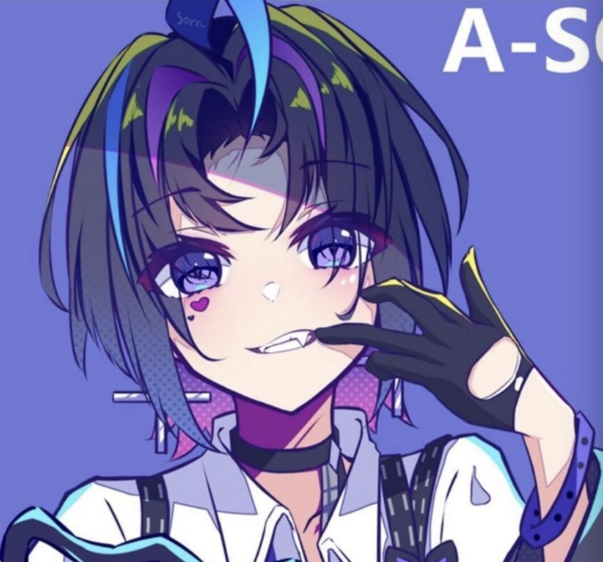
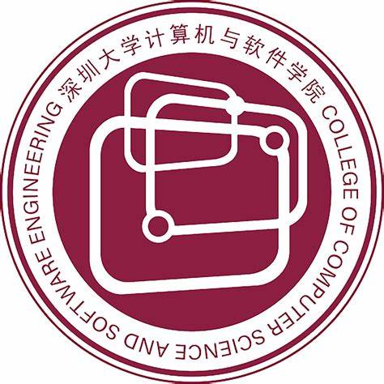
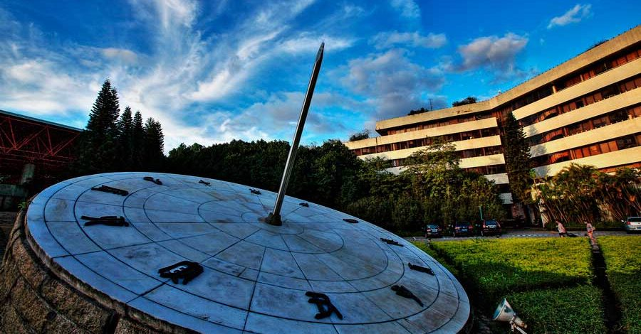
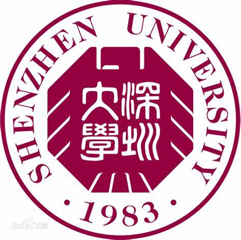
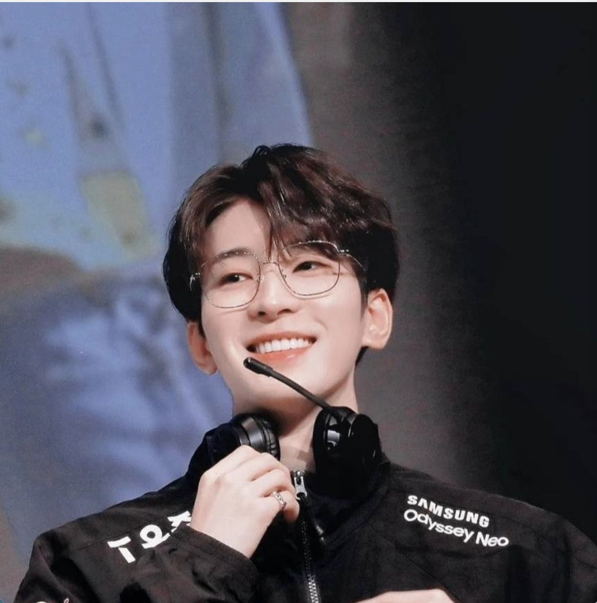
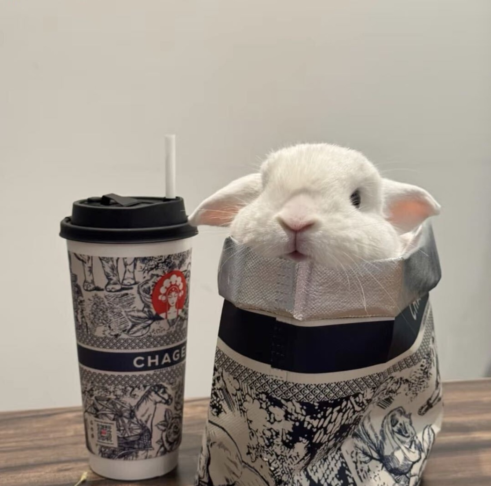

CVPR 2026 * 1Zhang Jinsen
Master Student, 2024
Interpretability of Multimodal Large Language Models
 |
 |
 |

CVPR 2026 * 1Master Student, 2024
Interpretability of Multimodal Large Language Models
Master Student, 2025
2D/3D Anomaly Detection

ICASSP 2026 * 1 ICML 2026 * 1Undergraduate, Junior
Multimodal/3D Understanding & VQA

Challenge Cup National Second PrizeUndergraduate, Sophomore
Embodied AI & VLA